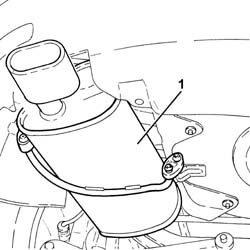
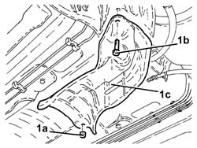
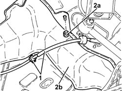
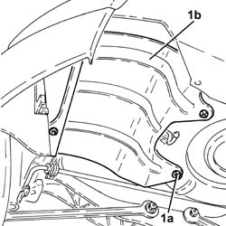
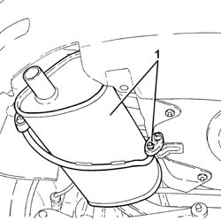
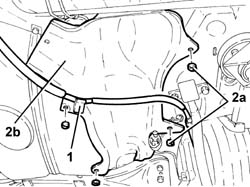

1076A40 EXHAUST PIPE HEAT SHIELD - R R
- Path
- Procedures > 10 ENGINE UNIT > 1076 EXHAUST PIPES AND SILENCERS > 1076A EXHAUST PIPE FASTENINGS AND PROTECTIONS > 1076A40 EXHAUST PIPE HEAT SHIELD - R R
- Kind
- repair procedure (removal / refitting; the operation number is the code)
- Applies to
- engines: 1.8 T.SPARK, 1.9 JTD 16V; all production periods
- Interactive page
- https://sloeber94.github.io/elrnDB-aGt/en/#/125001092
Applies to: engines: 1.9 JTD 16V; all production periods
 Removing
Removing
 Refitting
RefittingPosition the vehicle on a lift.
Proceed with the removal
Op. 1076B18 RIGID SECTION OF EXHAUST PIPE BETWEEN CATALYTIC CONVERTER AND SILENCER - R + R.
1. Remove the rear exhaust silencer by releasing from the flexible mounts.

Applies to: engines: 1.9 JTD 16V; all production periods
1. Undo units (1a), bolt (1b) and remove the front exhaust pipe heat shield (1c).

Applies to: engines: 1.9 JTD 16V; all production periods
1. Release the handbrake cable from the bracket.
2. Release from fastenings (2a) and remove the intermdiate heat shield from exhaust pipe (2b).

Applies to: engines: 1.9 JTD 16V; all production periods
1. Undo retaining clips (1a) and remove the rear heat shield (1b) from the exhaust pipe.

Applies to: engines: 1.9 JTD 16V; all production periods
Refitting
RemovingPlace the exhaust pipe rear heat shield back in its housing and secure it using the clips.
Refit the intermediate exhaust pipe heat shield and secure.
Secure the handbrake cable to the bracket.
Place the exhaust pipe front heat shield back in its housing and secure it using the bolt and the nuts.
Replace the rear exhaust silencer in its housing and secure to the flexible mounts.
Proceed with the refitting
Op. 1076B18 RIGID SECTION OF EXHAUST PIPE BETWEEN CATALYTIC CONVERTER AND SILENCER - R + R.
Remove the vehicle from the lift.
Applies to: engines: 1.8 T.SPARK; all production periods
Removing
RefittingPosition the vehicle on a lift.
Proceed with the removal
Op. 1076B24 INTERMEDIATE EXHAUST SILENCER - R + R.
1. Remove the rear exhaust silencer by releasing from the flexible mounts.

Applies to: engines: 1.8 T.SPARK; all production periods
1. Undo units (1a), bolt (1b) and remove the front exhaust pipe heat shield (1c).

Applies to: engines: 1.8 T.SPARK; all production periods
1. Release the handbrake cable from the bracket.
2. Remove retaining clips (2a) and remove intermediate heat shield (2b).

Applies to: engines: 1.8 T.SPARK; all production periods
1. Remove retaining clips (1a) and remove rear heat shield (1b).

Applies to: engines: 1.8 T.SPARK; all production periods
Refitting
RemovingPlace the rear heat shield in its housing and secure it using the retaining clips.
Place the intermediate heat shield in its housing and secure it using the retaining clips.
Secure the handbrake cable to the bracket.
Place the exhaust pipe front heat shield back in its housing and secure it using the bolt and the nuts.
Replace the rear exhaust silencer in its housing and secure to the flexible mounts.
Proceed with the refitting
Op. 1076B24 INTERMEDIATE EXHAUST SILENCER - R + R.
Remove the vehicle from the lift.